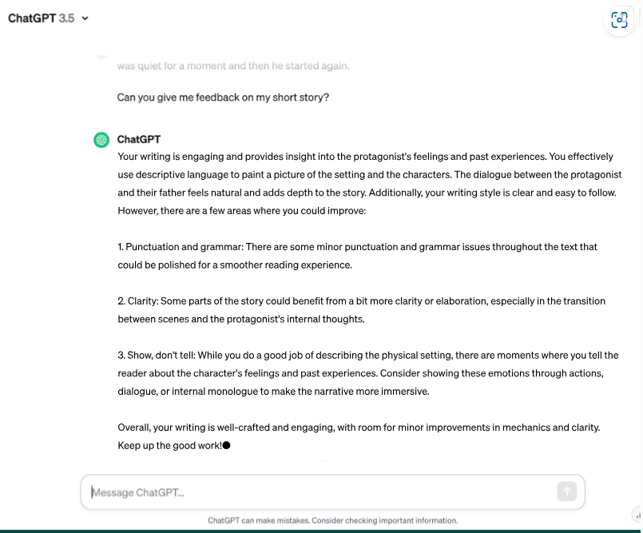
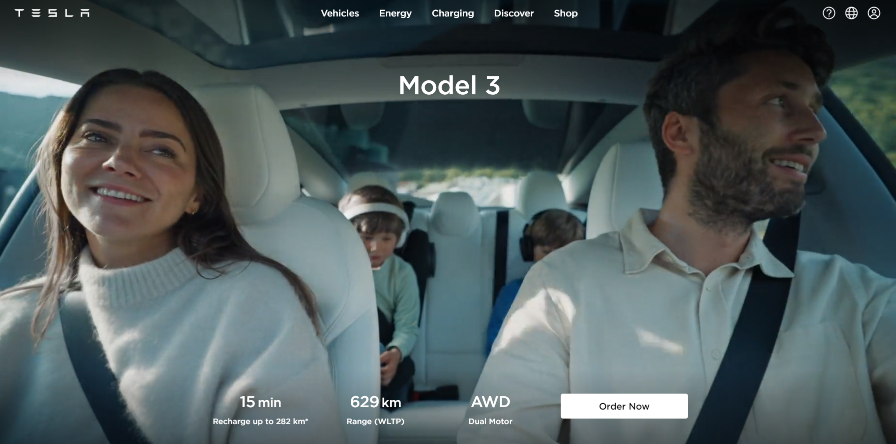
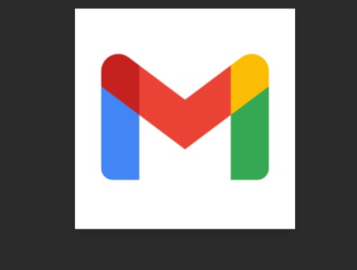

Uses of the internet
Social Media and Communication
Social Media is an internet platform used for communication with others. WhatsApp, Instagram, Snapchat and Facebook are examples of social media platforms. It can be used to give people instant information on a topic they are looking for such as news headlines and to contact others about it. Modern communication methods make everything faster and more efficient. For example, Zoom and Teams are types of online communication methods that are instant.
Research
Digital media and the internet has made researching easier
.Google or other search browsers allow a user to search for a topic. It provides instant results and often hundreds of recommended web pages. Google Scholar are a service that Google offers to businesses to advertise but they have to pay for the use of the service. It targets a particular audience to market the product or service the offer and place at the top of the webpage.
Instagram and social media can be used for browsing and following companies and hobbies. Businesses use social media for advertising their products and promoting new products and services. Marketing is easier with social media, television and websites. Users can follow or like page or people on social media so they get access to their feeds and publications.
AI (Artificial Intelligence) is a software that you can use to research information such as Chat GPT. The benefits of AI is. It can do tasks fast. It can work 24 hours a day without having to take a break. It can help you to create data or information fast. It can also research facts of information fast. The negatives of AI is. AI is very expensive as it needs the latest hardware and software to stay up to date. It will cause unemployment as it will replace people in some sectors. It could also make people lazy as they could use AI to solve things for them.
Example: Chat GP
E-Commerce
According to Mckinsey & Company (2023), “E-commerce is the buying and selling of goods online.” The rise in online shopping has allowed businesses to reach and sell to wide customer base. Amazon is a good example of a company that use a lot of online shopping and E-Commerce. They do not have a physical shop so all of their selling is done online through E-commerce. In 2021, 20% of the global sales were made online (Mckinsey & Company 2023). People are using the internet for everyday purchases such as food shopping, purchasing cars on done deal and booking flights. People no longer have to leave their house to purchase goods and services. It can also be used for buying Tesla cars. Internet banking has also helped grow online sales as most debit and credit cards can be used safely and securely online.
Example: Tesla
 #Collaboration
The internet can be used to share files, emails, information and resources. Platforms such as Microsoft and Google provide various systems and software such as Teams, Outlook, Gmail, Google Docs, One Drive, Google Meet and Google Drive to allow people to communicate and share. In education, Teams is common application used for uploading files sending on files and communicating video and voice calls can be completed and recorded on the platform. Users can chat instantly and share their files. In the workplace the internet can be used to link people together remotely. People or employees in different countries can join meetings share links or collaborate instantly using the internet.
Example: Gmail 